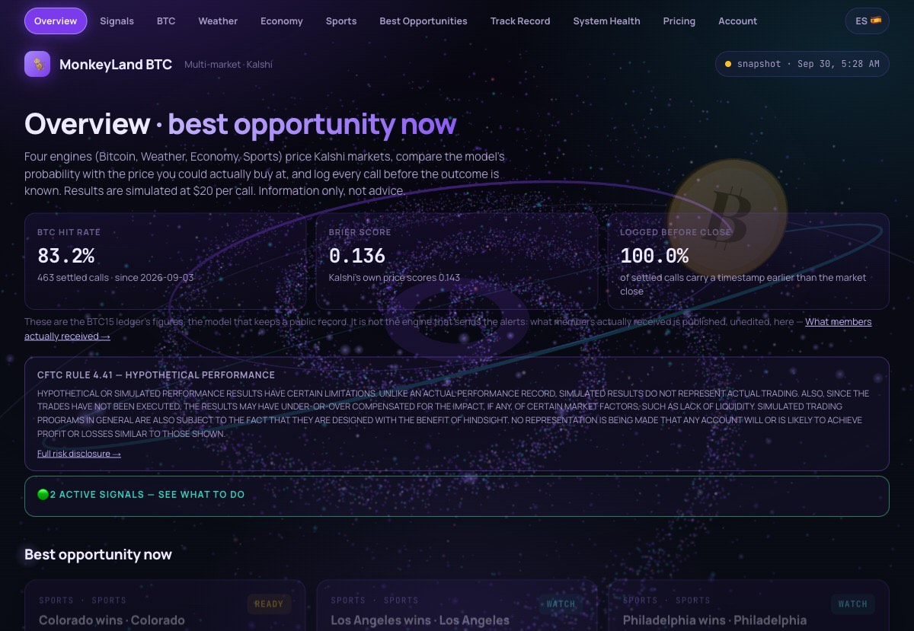

Market data platform
BackendA backend on Supabase and PostgreSQL that pulls live pricing from a market API, scores contracts against several models and publishes the results to a public dashboard.
- 20 Deno and TypeScript edge functions, 37 SQL migrations, all scheduled through cron jobs
- Test suite across 10 files, so scoring logic fails loudly instead of returning quiet bad numbers
- Traced intermittent production 500s to the SQL view behind the main query and rewrote it
Live dashboard Private repository